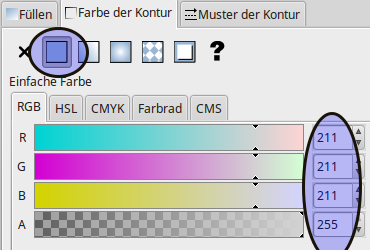
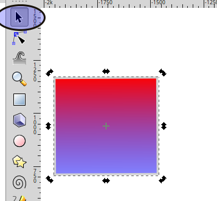
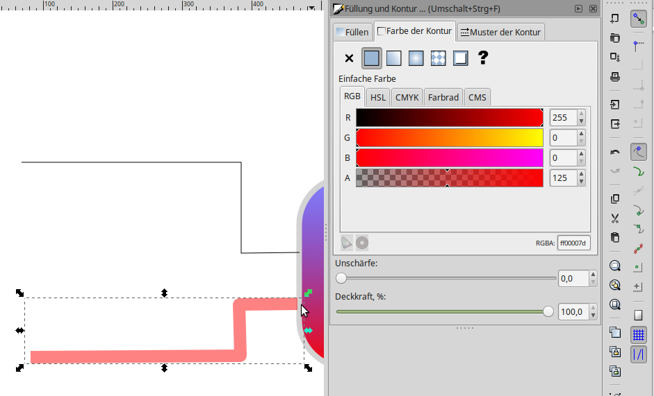
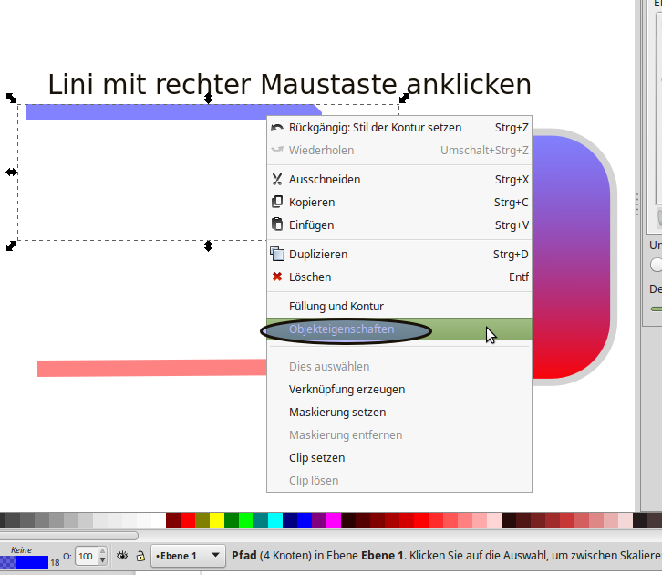

Instructions for creating an animated hydraulic plan¶
Requirement¶
- Inkscape
We create a buffer¶
- Start Inkscape Start
- Create a rectangle

- Select fill and contour

- Set the color of the outline to gray

- Set the width of the contour

- Result

- Create fill with gradient

- Use the edit function to apply two colors to the gradient, Color 1 (red) Assign with 100% coverage

- Color two (blue) with 50% coverage

- Change color gradient by rotate the object

- Change color gradient by moving the gradient line

- Round off the corners

We create Pipes¶
Pipes are created with the freehand-line draftsman. It is also possible to draw straight lines Click on the starting point with the mouse. Click on the target point again, the line is finished. If you start with the new line at the last box of the old line, the lines will be connected. The drawing direction determines how later the animation runs. Drawn from right to left, fluid flows from right to left.


- Give line a volume, Filling the contour, Pattern of the contour

- Color of the contour


- Assign a name to the object. Will be needed later for the animation.
- Click on the line with the right mouse button
- Select object properties
- Click on the line with the right mouse button

- Change ID

Customize XML file (Inkscape)¶
Now comes the mystery of the animated lines
- To form groups, The required values can only be entered if the line has been defined as a group.

- Assign parameters to the group
- id=”<unique id>”
- class=”pipe_group show_flow flow_control”
- data-cometvisu-active=”1/0/3”
The parameters pipe_group, show_flow, data-cometvisu-active and flow_control mean:
- pipe_group => from the path a tubular shape is created
- show_flow => a flowing (abstract) fluid is “simulated”.
- data-cometvisu-active=”<ga>” => animates the fluid when GA is active
- flow_control => Animation

Adapt XML-File (Editor)¶
It is also possible to edit the SVG file directly via the editor. Basis is the line framed as a group
- Open the svg file with an editor and search for the ID (blue pipe)

- enrich the section with the following code.
<g
id="<unique id>"
class="pipe_group show_flow flow_control"
data-cometvisu-active="1/0/3">
<path />
</g>